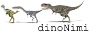

<!DOCTYPE html>
<html>
  <head>
    <script src="jspsych-6/jspsych.js"></script>
    <script src="jspsych-6/plugins/jspsych-selectExemplar.js"></script>
    <script src="jspsych-6/plugins/jspsych-labelExemplar.js"></script>
    <script src="jspsych-6/plugins/jspsych-judgmentTest.js"></script>
    <script src="jspsych-6/plugins/jspsych-instructions.js"></script>
    <script src="jspsych-6/plugins/jspsych-free-sort.js"></script>
    <script src="jspsych-6/plugins/jspsych-html-button-response.js"></script>
    
    <link rel="stylesheet" href="jspsych-6/css/jspsych.css"></link>
  </head>

  <script>

    n_families = 4;
    n_subFamilies = 2;
    n_species = 2;
    number_btn = n_families*n_subFamilies;

    n_trials_sdl = 10;
    n_trials_freeSort = 2;
    n_blocks_judgment = 1;

    n_tests = 3;
    n_sdl = 2;
    count_test = 0;
    count_sdl = 0;

     // INSTRUKTIONEN
    var welcome={

    };
    var informedConsent={
      type: 'instructions',
      pages: [""
        +"<h3>...page under construction..."],  
      show_clickable_nav: true,
    };
    var instruction = {
      type: 'instructions',
      pages: [["<h3><span 'style = margin-left: 80'>How quickly can you learn to group natural objects in a meaningful way?</h3>"
      +"<h3>How easy is it for you to spot important information and neglect the unimportant?</h3>"],
      ["<p> Educational sciences tell us that these abilities are cruical to learn new things, <br>no matter whether they are things of sports, mathematics, science or arts. <p>The purpose of the present task is to measure these abilities <br>by the example of a self-determined discovery of dinosaur families."
      +"<p>The task takes place in a simple learning environment,<br> where you can review different dinosaur species to figure out their family memberships."],
      ["<h3>How to perform the task?</h3>"],
      ["<p class='largeMarginToTop'>There will be a series of learning episodes, and each episode consists of the following three steps:"
      +"<p><b>(a)</b> Choose one of eight species yourself"
      +"<p>"
      +"<p><b>(b)</b> Review its features and decide on its family membership.<br>(In the example, the decision is made on the family of the Theropoda.)"
      +"<p>"
      +"<p><b>(c)</b> At first, you will need to guess. Over time, however, <br> you can learn the correct family membership by trial and error."
      +"<p>"],
      ["<h3>How to achieve a high performance score?</h3>"],
      ["<p class='largeMarginToTop'>You need to balance two goals:"
      +"<li><b>Breadth of exploration</b>: Get to know as many species as possible. Do not concentrate on just a few.</li>"
      +"<li><b>Accuracy</b>: Make as few errors as possible in determining the family membership of a selected species.</li>"
      +"<p>To help you keep track of your activities, <br>the number above each picture shows you how often you have already selected the species," 
      +"<br>and the colour indices your accuracy in determining its membership so far. <br>The colors have the following meaning:"
      +"<table align='center' id='colorCode'> "
      +"<tr><td style='background-color:white;border:solid 1px; border-radius: 45px' width='20'></td><td style:'text-align:left'>You have selected the species less than 3 times</td></tr>"
      +"<tr><td style='background-color:red;border:solid 1px; border-radius: 45px'></td><td >Poor accuracy (<25% correct)</td></tr>"
      +"<tr><td style='background-color:orange;border:solid 1px; border-radius: 45px'></td><td>Fair (>25%)</td></tr>"
      +"<tr><td style='background-color:yellow;border:solid 1px; border-radius: 45px'></td><td>Good (>50%)</td></tr>"
      +"<tr><td style='background-color:green;border:solid 1px; border-radius: 45px'></td><td>Very good (>75% correct)</td></tr></table>"
      +"<p>In the example below, the learner should try to improve their understanding of "
      +"<br> species 2 and 3 (not yet attended at all) as well as 4 (accuracy below 25%)."
      +"<p>"],
      ["<h3>Knowledge tests</h3>"
      +"From time to time, you will also have to take a knowledge test."
      +"<br>That way, we want to explore, if different learning strategies (in choosing species) "
      +"<br>relate to differences in learning success (improvements in knowledge tests)."
      +"<p>In sum, there are eight quick knowledge tests (about one minute each)."
      +"<p>Every time, one of two types of knowledge tests need to be taken:"
      +"<li><b>Free sort</b>: In this type of test, you must group the pictures of the species <br>so that the resulting groups correspond to known families within biology."
      +"<p>"
      +"<li><b>Judgement</b>: Here, one picture is presented together with one label, <br>and you have to judge whether this picture-label pair is correct."
      +"<p>"
      +"<p>When you click the Next button, the first (pre-)knowledge test begins."],
      ["<p class='largeMarginToTop'><b>Are you ready to take the first test?"]],  
      show_clickable_nav: true,
      on_finish: function(data){
        t_sdl=0;
        t_judge=0;
        t_judge_block=0;
        t_freeSort=0;
        makeTestNames_freeSort();
        reshuffle_sdl();
        makeTestNames_judgment();
      }
    };
    
    var bridge_testToLearning = {
      type: 'html-button-response',
      stimulus: function(){return ["<h2> You have passed the "+count_test+". out of "+n_tests+" knowledge tests.</h2>"
        +"Click Next to start the "+(count_sdl+1)+". learning phase."]},
      choices: ["Next"],
      on_finish: function(data) {
        t_sdl = 0;
      }
    };

    var bridge_learningToTest = {
      type: 'html-button-response',
      stimulus: function(){return ["<h2> The "+count_sdl+". out of "+n_sdl+" learning phases is over.</h2>"
        +"Click Next to take the "+(count_test+1)+". knowledge test."]},
      choices: ["Next"],
      on_finish: function(data) {
        t_judge = 0;
        t_judge_block = 0;
        t_freeSort = 0;
      }
    };

    var summary = {

      type: 'html-button-response',
      stimulus: "<h2> You are done :-)</h2> "
        +"<p>To Dos: Summary scores for ... <li>Breadth of learning <li>Accuracy during learning <li>The two knowledge tests",
      choices: ["Next"]

    };

    var goodBye = {
      
      type: 'html-button-response',
      stimulus: "<h2>Thank you for your participation!",
      choices: ["Next"]

    };

    // FUNCTIONS and VARIABLES
    function scrollWin() {
      window.scrollTo(0, 0);
    };

    function randomInteger(min, max) {
      return Math.floor(Math.random() * (max - min) + min);
    };
    function makeSeq(seqLength) {
      sequence = [];
      for (i = 0; i < seqLength; i++) {
        sequence.push(i);
      }
      return sequence
    };

    var tax_bottomUp = {
        Charachodontosaurus:"Theropoda",
        Velociraptor:"Theropoda",
        Argentinosaurus:"Sauropodomorpha",
        Saturnalia:"Sauropodomorpha",
        Macrogryphosaurus:"Elasmaria",
        Isasicursor:"Elasmaria",
        Barilium:"Styracosterna",
        Uteodon:"Styracosterna"
    }

    var properties_of_species = {
        Charachodontosaurus:["Large","Reptile-hipped","Biped"],
        Velociraptor:["Small","Reptile-hipped","Biped"],
        Argentinosaurus:["Large","Reptile-hipped","Quadruped"],
        Saturnalia:["Small","Reptile-hipped","Quadruped"],
        Macrogryphosaurus:["Large (relative to its family members)","Bird-hipped","Biped"],
        Isasicursor:["Small","Bird-hipped","Biped"],
        Barilium:["Large","Bird-hipped","Quadruped"],
        Uteodon:["Small","Bird-hipped","Quadruped"]
    };
    var properties_illustrated = {
        Charachodontosaurus:["dino_pics/size_carcharodontosaurus.png","dino_pics/reptileHip.png","Walks on two legs"],
        Velociraptor:["dino_pics/size_velociraptor.png","dino_pics/reptileHip.png","Walks on two legs"],
        Argentinosaurus:["dino_pics/size_argentinosaurus.png","dino_pics/reptileHip.png","Walks on four legs"],
        Saturnalia:["dino_pics/size_saturnalia.png","dino_pics/reptileHip.png","Walks on four legs"],
        Macrogryphosaurus:["dino_pics/size_macrogryphosaurus.png","dino_pics/birdHip.png","Walks on two legs"],
        Isasicursor:["dino_pics/size_isasicursor.png","dino_pics/birdHip.png","Walks on two legs"],
        Barilium:["dino_pics/size_barilium.png","dino_pics/birdHip.png","Walks on four legs"],
        Uteodon:["dino_pics/size_uteodon.png","dino_pics/birdHip.png","Walks on four legs"]
    };


    var Theropoda = {
        Charachodontosaurus:["dino_pics/Charachodontosaurus1.png","dino_pics/Charachodontosaurus2.png"],
        Velociraptor:["dino_pics/Velociraptor1.png","dino_pics/Velociraptor2.png"]
    };
    var Sauropodomorpha = {
        Argentinosaurus:["dino_pics/Argentinosaurus1.png","dino_pics/Argentinosaurus2.png"],
        Saturnalia:["dino_pics/Saturnalia1.png","dino_pics/Saturnalia2.png"]
    };
    var Elasmaria = {
        Macrogryphosaurus:["dino_pics/Macrogryphosaurus1.png","dino_pics/Macrogryphosaurus2.png"],
        Isasicursor:["dino_pics/Isasicursor1.png","dino_pics/Isasicursor2.png"]
    };
    var Styracosterna = {
        Barilium:["dino_pics/Barilium1.png","dino_pics/Barilium2.png"],
        Uteodon:["dino_pics/Uteodon1.png","dino_pics/Uteodon2.png"]
    };
    
    var dino_pics = {
        Theropoda,
        Sauropodomorpha,
        Elasmaria,
        Styracosterna
      };
    
    var total_click_counter = {
        Charachodontosaurus:0,
        Velociraptor:0,
        Argentinosaurus:0,
        Saturnalia:0,
        Macrogryphosaurus:0,
        Isasicursor:0,
        Barilium:0,
        Uteodon:0
      };

    var correct_click_counter = {
        Charachodontosaurus:0,
        Velociraptor:0,
        Argentinosaurus:0,
        Saturnalia:0,
        Macrogryphosaurus:0,
        Isasicursor:0,
        Barilium:0,
        Uteodon:0
      };

    var wrong_click_counter = {
        Charachodontosaurus:0,
        Velociraptor:0,
        Argentinosaurus:0,
        Saturnalia:0,
        Macrogryphosaurus:0,
        Isasicursor:0,
        Barilium:0,
        Uteodon:0
      };

    var accuracy = {
        Charachodontosaurus:0,
        Velociraptor:0,
        Argentinosaurus:0,
        Saturnalia:0,
        Macrogryphosaurus:0,
        Isasicursor:0,
        Barilium:0,
        Uteodon:0
      };

    function reshuffle_sdl(){ 
      // In every trial, sample one exemplar from each category and reshuffle the sequence of categories
      var SeqMono_families = [];
      var Seq0 = makeSeq(n_families);
      for(i=0;i<n_families;i++){
         for(j=0;j<n_subFamilies;j++){
             SeqMono_families.push(Seq0[i])
          }
      };

      var SubFam_indices = [];
      for(x=0;x<n_families;x++){
        var Seq0 = makeSeq(n_subFamilies);
        var Seq1 = [];
        for(y=0;y<n_subFamilies;y++){
            y_sample = randomInteger(0,Seq0.length);
              Seq1.push(Seq0[y_sample]);
              Seq0.splice(y_sample,1);
        };
        SubFam_indices.push(Seq1);
      }
      
      SeqRand_families = [];
      for(i = 0; i<number_btn; i++){
            i_sample = randomInteger(0,SeqMono_families.length);
            SeqRand_families.push(SeqMono_families[i_sample]);
            SeqMono_families.splice(i_sample,1);
      };
      dino_pics_reshuffled_sdl = [];
      current_species_sequence_sdl = [];
      for (i = 0; i < SeqRand_families.length; i++) {
            i_familyName = Object.keys(dino_pics)[SeqRand_families[i]];
            i_subFamilies = dino_pics[i_familyName];
            i_subFamily_sampled_ID = SubFam_indices[SeqRand_families[i]][0];
            i_subFamily_sampled_name = Object.keys(i_subFamilies)[i_subFamily_sampled_ID];
            current_species_sequence_sdl.push(i_subFamily_sampled_name);
            SubFam_indices[SeqRand_families[i]].splice(0,1);
            i_species  = i_subFamilies[i_subFamily_sampled_name][randomInteger(0, n_subFamilies)];
            dino_pics_reshuffled_sdl.push(i_species);
      };
    
      // In every trial, reshuffle the sequence of label buttons
      var dino_labels = Object.keys(dino_pics);
      var number_btn_labels = dino_labels.length;
      
      var SeqMono_labels = makeSeq(dino_labels.length);
      SeqRand_labels = [];
      for(i = 0; i<number_btn_labels; i++){
        i_sample = randomInteger(0,SeqMono_labels.length);
        SeqRand_labels.push(SeqMono_labels[i_sample]);
        SeqMono_labels.splice(i_sample,1)
      }
      dino_labels_reshuffled_sdl = [];
      for (i = 0; i < number_btn_labels; i++) {
        dino_labels_reshuffled_sdl.push(dino_labels[SeqRand_labels[i]]);
      };
    };
    function makeTestNames_judgment(){
      var species_indices = [];
      for(fam_x=0; fam_x <n_families; fam_x++){
        species_indices.push([])
      };

      for(xf=0;xf<n_families;xf++){
        for(xsf=0;xsf<n_subFamilies;xsf++){
          var Seq0 = makeSeq(n_species);
          var Seq1 = [];
            for(y=0;y<n_species;y++){
                y_sample = randomInteger(0,Seq0.length);
                  Seq1.push(Seq0[y_sample]);
                  Seq0.splice(y_sample,1);
            };
          species_indices[xf].push(Seq1);
        };
      };
      dino_pics_judgment_perBlock = [];
      species_sequence_judgment_perBlock = [];
      names_tobeDisplayed_judgment_perBlock = [];
      true_familyNames_judgment_perBlock = [];
      for(block_x=0;block_x<n_blocks_judgment;block_x++){
        var SeqMono_families = [];
        var Seq0 = makeSeq(n_families);
        for(i=0;i<n_families;i++){
          for(j=0;j<n_subFamilies;j++){
             SeqMono_families.push(Seq0[i])
          }
        };
        var SubFam_indices = [];
        for(x=0;x<n_families;x++){
          var Seq0 = makeSeq(n_subFamilies);
          var Seq1 = [];
          for(y=0;y<n_subFamilies;y++){
              y_sample = randomInteger(0,Seq0.length);
                Seq1.push(Seq0[y_sample]);
                Seq0.splice(y_sample,1);
          };
          SubFam_indices.push(Seq1);
        };
      
        SeqRand_families = [];
        for(i = 0; i<number_btn; i++){
              i_sample = randomInteger(0,SeqMono_families.length);
              SeqRand_families.push(SeqMono_families[i_sample]);
              SeqMono_families.splice(i_sample,1);
        };
        var dino_pics_reshuffled_judgment = [];
        var current_species_sequence_judgment = [];
        for (i = 0; i < SeqRand_families.length; i++) {
              i_family_ID = SeqRand_families[i];
              i_familyName = Object.keys(dino_pics)[i_family_ID];
              i_subFamilies = dino_pics[i_familyName];
              i_subFamily_ID = SubFam_indices[SeqRand_families[i]][0];
              i_subFamily_name = Object.keys(i_subFamilies)[i_subFamily_ID];
              current_species_sequence_judgment.push(i_subFamily_name);
              SubFam_indices[SeqRand_families[i]].splice(0,1);
              i_species_ID = species_indices[i_family_ID][i_subFamily_ID][0]
              species_indices[i_family_ID][i_subFamily_ID].splice(0,1);
              i_species  = i_subFamilies[i_subFamily_name][i_species_ID];
              dino_pics_reshuffled_judgment.push(i_species);
        };
        var true_familyNames_judgment = [];
        for(tx=0;tx<current_species_sequence_judgment.length;tx++){
          true_familyNames_judgment.push(tax_bottomUp[current_species_sequence_judgment[tx]]);
        };
        var names_tobeDisplayed_judgment = [];
        true_or_false_seq = [];
        for(tf=0;tf<true_familyNames_judgment.length;tf++){
            if(randomInteger(0,2)==0){
            true_or_false_seq.push("true");
            names_tobeDisplayed_judgment.push(true_familyNames_judgment[tf]);
          }else{
            true_or_false_seq.push("false");
            tf_trueName = true_familyNames_judgment[tf];
            setOfFamilyNames = Object.keys(dino_pics);
            trueName_pos = setOfFamilyNames.indexOf(tf_trueName);
            setOfFamilyNames.splice(trueName_pos,1)
            tf_falseName = setOfFamilyNames[randomInteger(0, setOfFamilyNames.length)];
            names_tobeDisplayed_judgment.push(tf_falseName);
          }
        };
        dino_pics_judgment_perBlock.push(dino_pics_reshuffled_judgment);
        species_sequence_judgment_perBlock.push(current_species_sequence_judgment);
        names_tobeDisplayed_judgment_perBlock.push(names_tobeDisplayed_judgment);
        true_familyNames_judgment_perBlock.push(true_familyNames_judgment);
      };
    };
    function makeTestNames_freeSort(){
      var SeqMono_families = [];
      var Seq0 = makeSeq(n_families);
      for(i=0;i<n_families;i++){
         for(j=0;j<n_subFamilies;j++){
             SeqMono_families.push(Seq0[i])
          }
      };

      var SubFam_indices = [];
      for(x=0;x<n_families;x++){
        var Seq0 = makeSeq(n_subFamilies);
        var Seq1 = [];
        for(y=0;y<n_subFamilies;y++){
            y_sample = randomInteger(0,Seq0.length);
              Seq1.push(Seq0[y_sample]);
              Seq0.splice(y_sample,1);
        };
        SubFam_indices.push(Seq1);
      };
      
      SeqRand_families = [];
      for(i = 0; i<number_btn; i++){
            i_sample = randomInteger(0,SeqMono_families.length);
            SeqRand_families.push(SeqMono_families[i_sample]);
            SeqMono_families.splice(i_sample,1);
      };
      dino_pics_reshuffled_freeSort = [];
      for (i = 0; i < SeqRand_families.length; i++) {
            i_familyName = Object.keys(dino_pics)[SeqRand_families[i]];
            i_subFamilies = dino_pics[i_familyName];
            i_subFamily_sampled_ID = SubFam_indices[SeqRand_families[i]][0];
            i_subFamily_sampled_name = Object.keys(i_subFamilies)[i_subFamily_sampled_ID];
            SubFam_indices[SeqRand_families[i]].splice(0,1);
            i_species  = i_subFamilies[i_subFamily_sampled_name][randomInteger(0, n_species)];
            dino_pics_reshuffled_freeSort.push(i_species);
      };
    };


    // SDL phase
    var SetOfDinoButtons = {
      type: 'selectExemplar',
      choices: function(){return dino_pics_reshuffled_sdl},
      prompt: function(){return "<p>Click on the animal that you would like to explore! <br><b>"+(n_trials_sdl-t_sdl)+"</b> trials remaining until the next knowledge test. </p>"},
      on_finish: function(data) { 
        btn_clickedPic_index = data.button_pressed
        species_clicked = current_species_sequence_sdl[btn_clickedPic_index]
        true_familyName = tax_bottomUp[species_clicked];
        properties_species_clicked = properties_of_species[species_clicked];
        props_illustrated_species_clicked = properties_illustrated[species_clicked];
        total_click_counter[species_clicked] += 1
      }
    };

    var NameSelectedPic = {
      type: 'labelExemplar',
      stimulus: function(){return dino_pics_reshuffled_sdl[btn_clickedPic_index]},
      choices: function(){return dino_labels_reshuffled_sdl},
      on_finish: function(data){
        btn_clickedLabel_index = data.button_pressed
        clickedLabel_name = dino_labels_reshuffled_sdl[btn_clickedLabel_index]
        if(clickedLabel_name==true_familyName){correct_click_counter[species_clicked] += 1}else{
          wrong_click_counter[species_clicked] += 1}
        rights = correct_click_counter[species_clicked];
        wrongs = wrong_click_counter[species_clicked];
        // https://www.researchgate.net/publication/5012443_Optimal_Correction_for_Guessing_in_Multiple-Choice_Tests
        corrected_for_guessing = (rights-wrongs)/(rights+wrongs);
        accuracy[species_clicked] = corrected_for_guessing;
        t_sdl += 1;
        if (t_sdl==n_trials_sdl) {count_sdl += 1};
        reshuffle_sdl();
      }
    };
    t_sdl = 0;
    reshuffle_sdl();
    sdl_loop = {
      timeline: [SetOfDinoButtons,NameSelectedPic],
      loop_function: function(data){      
          if(t_sdl < n_trials_sdl){
                  return true;
              } else {
                  return false;
              }
        },
       
    };
    
    var test_judgment = {
      type: 'judgmentTest',
      stimulus: function(){return dino_pics_judgment_curBlock[t_judge]},
      choices: ["Yes","No"],
      choices_conf: ["Very uncertain","Uncertain","Certain","Very Certain"],
      on_finish: function(data){
        console.log([t_judge,t_judge_block])
        t_judge += 1;
        n_trials_per_Block = n_families*n_subFamilies;
        if(t_judge==n_trials_per_Block && t_judge_block==(n_blocks_judgment-1)){count_test += 1}
        if(t_judge==n_trials_per_Block && t_judge_block<(n_blocks_judgment-1)){
          t_judge_block += 1;
          t_judge = 0;
          dino_pics_judgment_curBlock = dino_pics_judgment_perBlock[t_judge_block];
          species_sequence_judgment_curBlock = species_sequence_judgment_perBlock[t_judge_block];
          names_tobeDisplayed_judgment_curBlock = names_tobeDisplayed_judgment_perBlock[t_judge_block];
          true_familyNames_judgment_curBlock = true_familyNames_judgment_perBlock[t_judge_block];
        };
        btn_clicked_yn = data.button_pressed;
        btn_clicked_confRating = data.button_pressed_conf;
      }
    };
    makeTestNames_judgment();
    t_judge = 0;
    t_judge_block = 0;
    dino_pics_judgment_curBlock = dino_pics_judgment_perBlock[t_judge_block];
    species_sequence_judgment_curBlock = species_sequence_judgment_perBlock[t_judge_block];
    names_tobeDisplayed_judgment_curBlock = names_tobeDisplayed_judgment_perBlock[t_judge_block];
    true_familyNames_judgment_curBlock = true_familyNames_judgment_perBlock[t_judge_block];
    
    var judgmentTest_loop = {
      timeline: [test_judgment],
      loop_function: function(data){         
          if(t_judge < (n_families*n_subFamilies)){
                  return true;
              } else {
                  return false;
              }
        },
    };

    t_freeSort=0;
    makeTestNames_freeSort();
    var test_freeSort = {
      type: 'free-sort',
      stimuli: function(){return dino_pics_reshuffled_freeSort},
      sort_area_height: 600,
      sort_area_width: 800,
      prompt: function(){return "<h2>Free Sort Knowlege Test: Question "+(t_freeSort+1)+ " out of " +n_trials_freeSort+"</h2>"
        +"<h3>Which of these species go together to form families?</h3>"
        +"Click and drag the species below to sort them so that similar species are close together.</p>"},
      on_finish: function(data){
        t_freeSort += 1;
        makeTestNames_freeSort();
        if (t_freeSort==n_trials_freeSort) {count_test += 1}
      }
    };    
    var freeSort_loop = {
      timeline: [test_freeSort],
      loop_function: function(data){
              
          if(t_freeSort < n_trials_freeSort){
                  return true;
              } else {
                  return false;
              }
        },
       
    };

    jsPsych.init({
      timeline: [informedConsent,instruction,
        freeSort_loop,bridge_testToLearning,sdl_loop,bridge_learningToTest,judgmentTest_loop,
        bridge_testToLearning,sdl_loop,bridge_learningToTest,freeSort_loop,
        summary,goodBye],
      on_finish: function() { jsPsych.data.displayData(); }
    });

  </script>
</html>